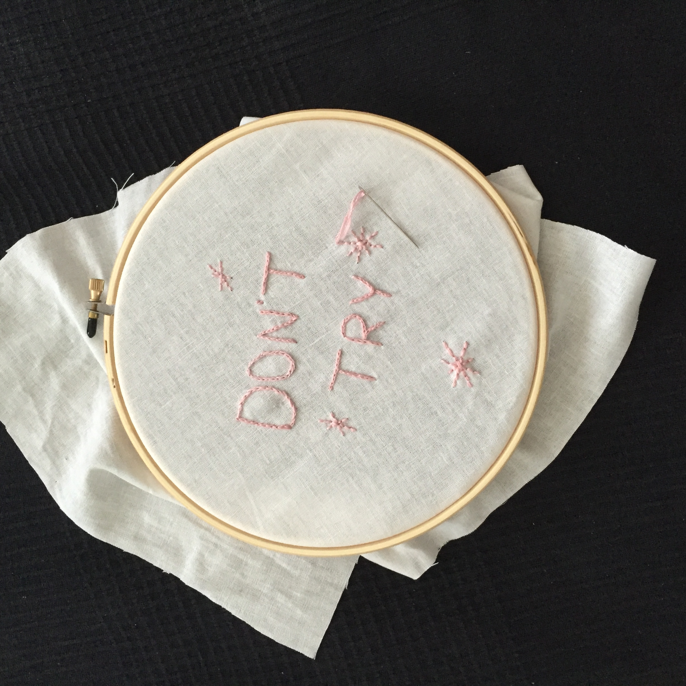

Who knows and who cares?
Apparently, sitting still isn't a hobby, but embroidery is as close as you can get to simultaneously doing something and nothing, so here it is. This site will show you some basic embroidery techniques and a few examples that would make Sartre... probably not care all that much.
